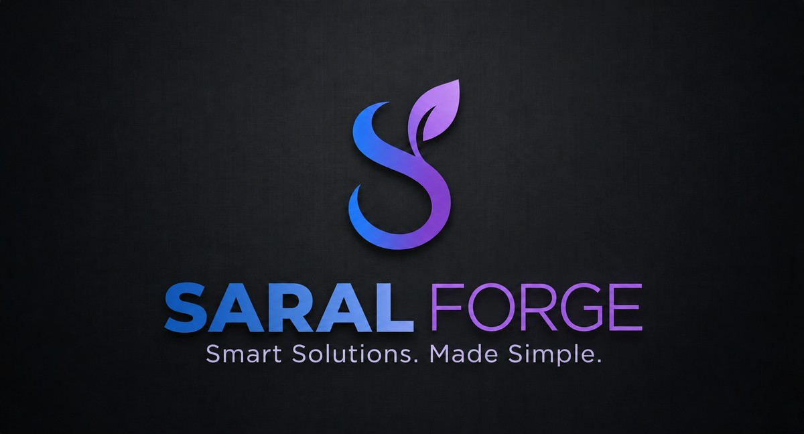

Reach and convert
Clarify what you offer, help the right people act, and remove friction from enquiries or bookings.
Saral Forge helps small business owners turn website needs and useful AI/LLM ideas into clear, maintainable software.
industry experienceApplied to product, engineering and operational problems.

01 · Problem range
Not every challenge needs a new product. It may need a clearer journey, a focused internal tool, safe automation or one sound technical decision.
Clarify what you offer, help the right people act, and remove friction from enquiries or bookings.
Replace repeated hand-offs, scattered spreadsheets and manual follow-up with one usable workflow.
Turn a useful idea or specialised requirement into a dependable web or mobile application.
Improve cloud foundations, connect older systems or introduce AI where it has a clear, testable role.
02 · Example problems
These illustrative workflows show how a tangled process can become a focused digital journey. They are not client case studies.
The problemTechnical enquiries can compete with general contact requests.
Proposed outputA focused structure that guides qualified buyers toward a detailed request for quote.
Evidence pending approval
The problemPhone calls and messages can make trip details easy to miss.
Proposed outputA mobile-first flow that captures the information needed to prepare a quote.
Evidence pending approval
03 · The idea
Good software removes decisions, duplication and dead ends. The path should become clearer as the system does more.
04 · What we build
Each engagement begins by finding the shortest useful path. The solution can span customer experience, operations, applications, automation or infrastructure.
Focused around the action your customer needs to take.
↗ 02From first enquiry to confirmed work, with fewer handoffs.
↗ 03Practical assistance with evaluations and clear guardrails.
↗ 04Tools for workflows that do not fit a template.
↗ 05Infrastructure that is easier to understand and operate.
↗How we work
Saral means simple. Here, simple means removing the work that should not be there.
05 · Built with experience
Saral Forge is a Sydney studio. That experience brings product thinking, software engineering and operational clarity to systems that are easier to use and easier to change.
A clear next step
Bring the messy version. We will start by making the problem legible.
Start a project